Media
Photos
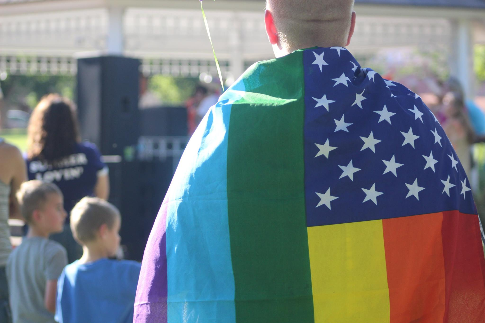 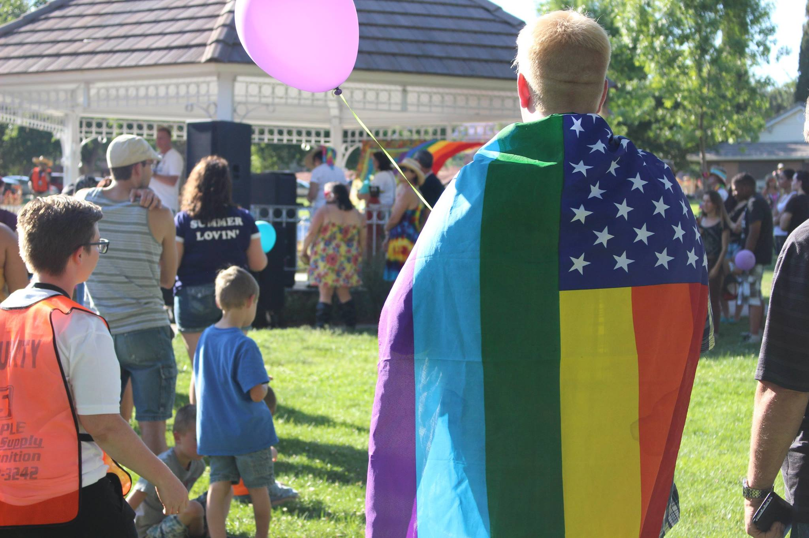 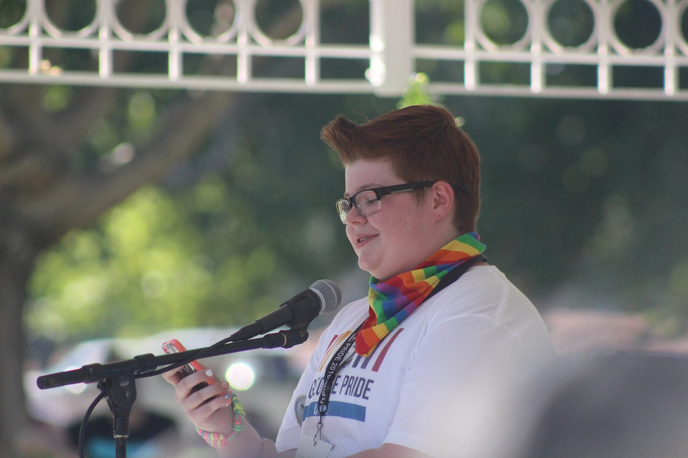 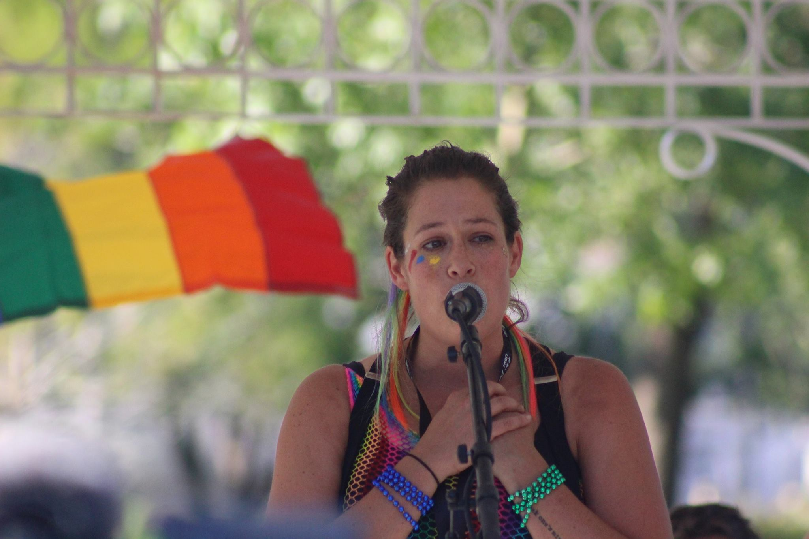 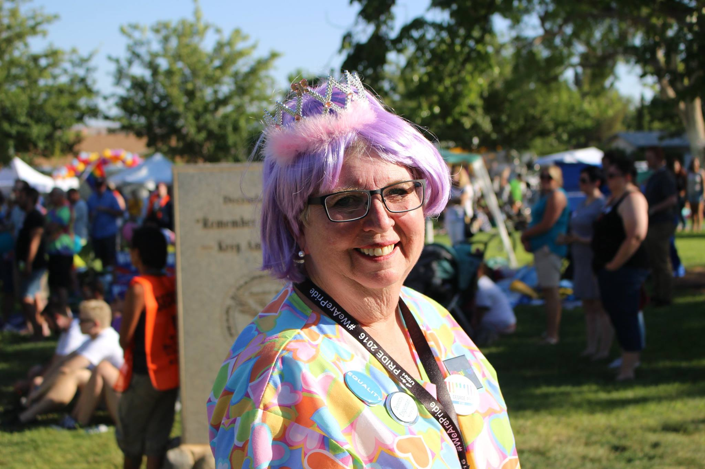 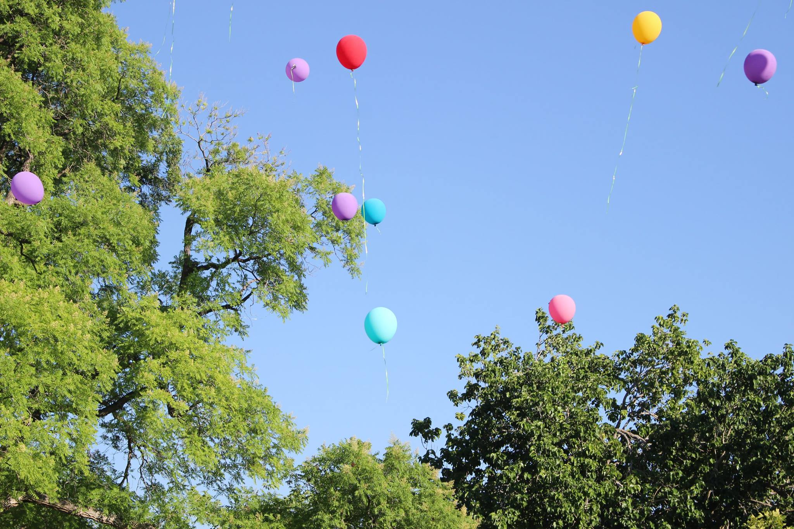 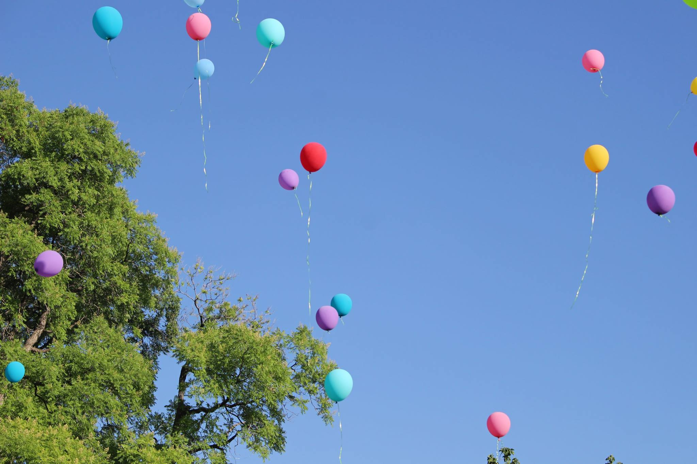 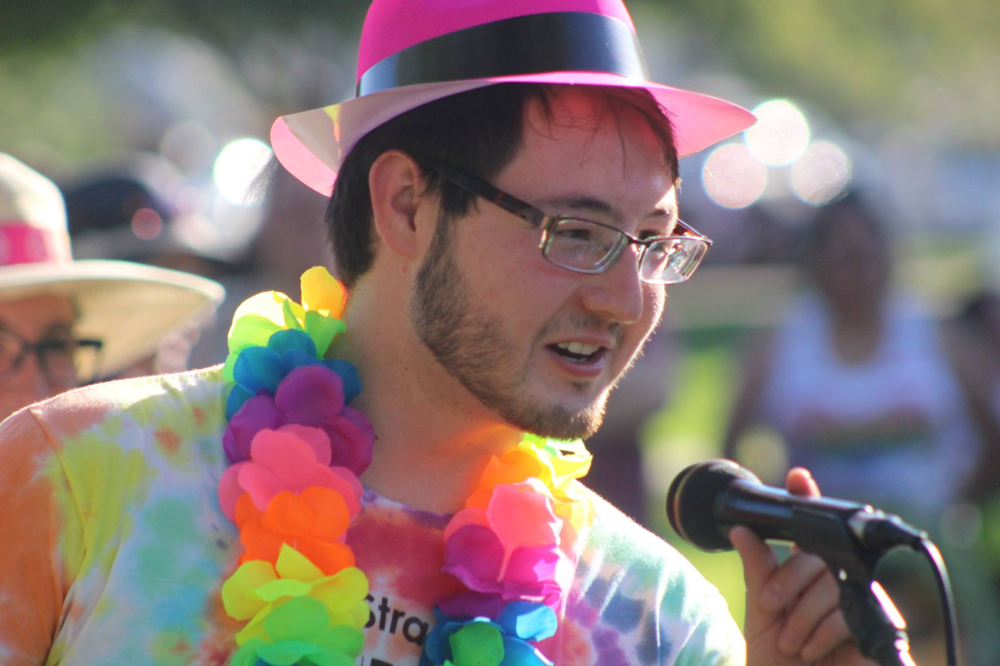 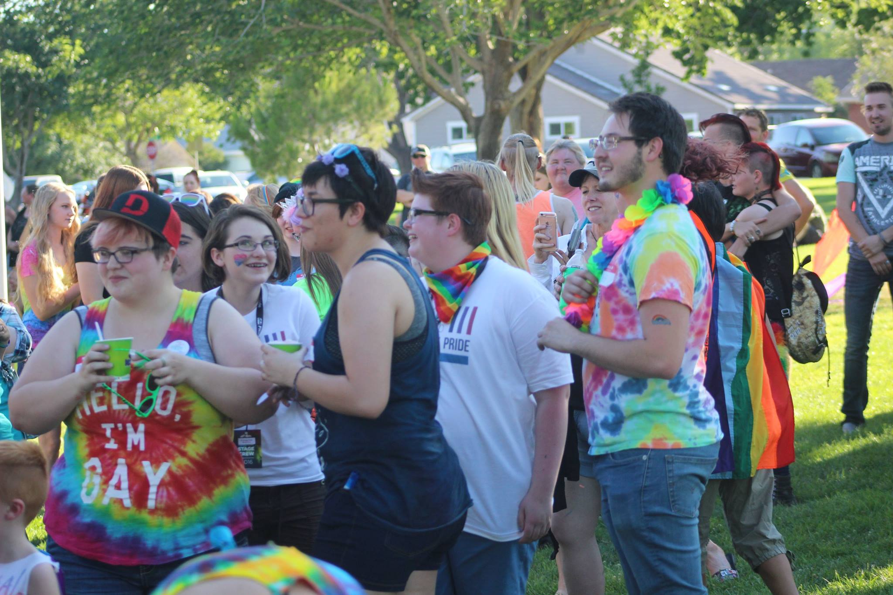 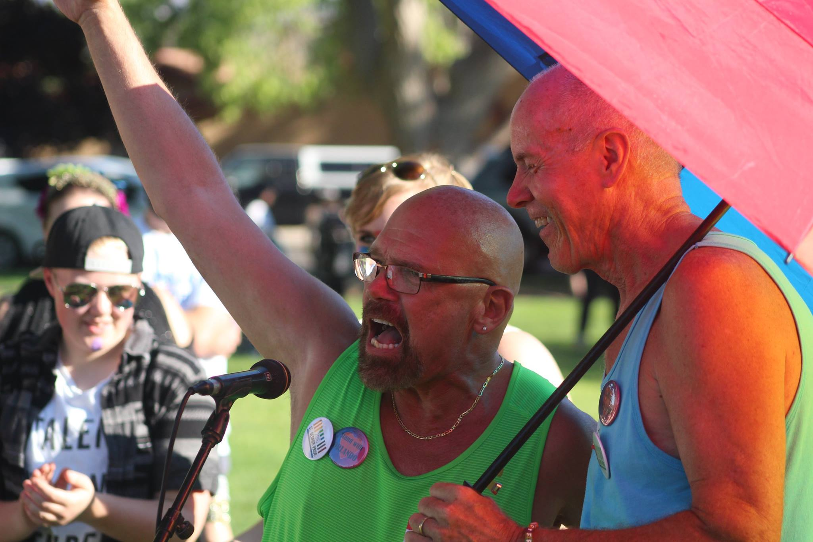 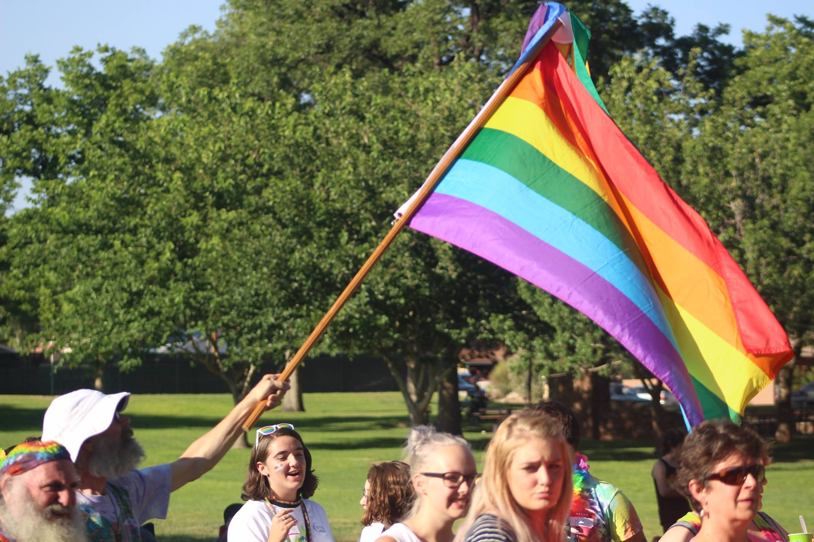 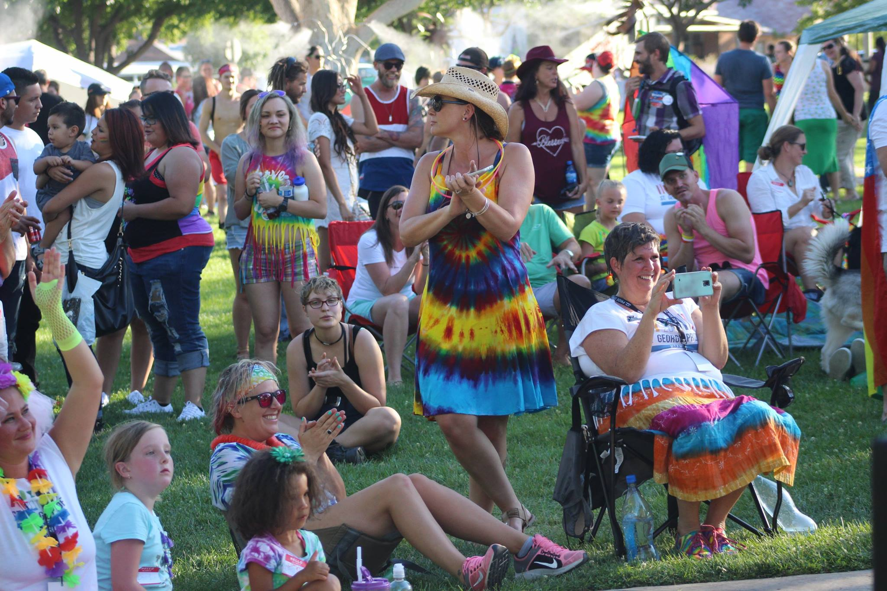Videos
News
A SAFE PLACE: DIXIE STATE LGBT RESOURCE CENTER OPENS
Written by Mori Kessler
August 30, 2016
ST. GEORGE – It’s not always easy finding a place where you feel safe to be yourself, let alone knowing who out there will support who you are. One goal of the recently created LGBTQ+ Resource Center at Dixie State University is to provide support and a safe space for students, sta and faculty who identify as a part of the lesbian, gay, bisexual, transgender and queer community
LOVE REIGNS LOUDER AT ST. GEORGE GAY PRIDE CELEBRATION
Written by Hollie Reina
June 26, 2016
ST. GEORGE – Hundreds of members of the lesbian, gay, bisexual and transgender community along with supporters and allies painted the town rainbow as they gathered at Vernon Worthen park in St. George Saturday for the first o fficial gay pride event and celebration held in the city.
ST. GEORGE PRIDE FESTIVAL CELEBRATES LIFE AND LOVE
By Darren M. Edwards
June 26, 2016
People from all over Southern Utah gathered in their brightest rainbow gear on Saturday, June 25 at Vernon Worthen Park to celebrate the first-ever St. George Pride Festival. There were games, live entertainment, and a short program, but more than anything else there was an overwhelming feeling of love and joy in the air unlike anything I’d experienced before. All you had to do was make eye contact with a stranger to provoke the most sincere and loving of smiles.
EQUALITY CELEBRATION RAISES MONEY, AWARENESS FOR LGBTQ COMMUNITY
Written by Don Gilman
ST. GEORGE — The 6th annual Equality Utah Celebration held Saturday at the Dixie Center St. George raised money for Equality Utah and sought to raise awareness of issues faced by the lesbian, gay, bisexual, transgender and queer community.